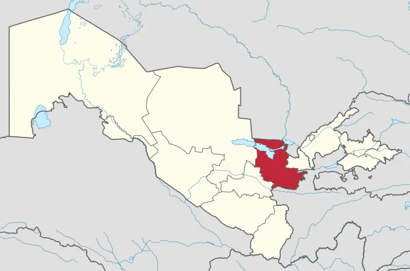

Jizzax viloyati
Jizzax viloyati — Oʻzbekiston Respublikasi tarkibidagi viloyat. Respublikaning markaziy qismida. 1973-yil 28-dekabrda tashkil etilgan. Shim.-sharqda Qozogʻiston Respublikasi va Sirdaryo viloyati, janubi-gʻarbda Samarqand, Navoiy viloyatlari, janubisharqda Tojikiston Respublikasi bilan chegaradosh. Maydon 21,2 ming km2. Aholisi 1 382,10 ming kishi (2020). Jizzax viloyatida 12 qishloq tumani (Arnasoy, Baxmal, Doʻstlik, Sharof Rashidov, Zarbdor, Zafarobod, Zomin, Mirzachoʻl, Paxtakor, Yangiobod, Forish, Gʻallaorol), 9 shahar (Gagarin, Dashtobod, Doʻstlik, Jizzax, Marjonbuloq, Paxtakor, Gʻallaorol,Zarbdor,Zomin), 8 shaharcha (Boʻston, Zafarobod, Oʻsmat, Uchquloch, Bog'don,Pishag'ar,Qoʻytosh,Sharq yulduzi), 95 qishloq fuqarolari yigʻini bor (2001). Markazi — Jizzax shahri (Jizzax viloyati tumanlari haqida tegishli maqolalarga q.)
Jizzax viloyati respublika ishlab chiqarishda va madaniy taraqqiyotida salmoqli oʻrin tutadi. Xususan, paxta, gʻalla, sabzavot, meva, chorva mahsulotlari yetishtiriladi. Bogʻdorchilikni rivojlantirishga eʼtibor berilmoqda. Qurilish materiallari, xalq isteʼmol mollari ishlab chiqaradigan korxonalar salmogʻi oshdi. Viloyatda tadbirkorlikni rivojlantirish maqsadida 2,5 mlrd. soʻmdan ziyod kredit mablagʻlari ajratildi. Faoliyat koʻrsatayotgan 9400 ga yaqin xoʻjalik subʼyektlarining qariyb 8300 tasi nodavlat xoʻjaliklaridir.
Jizzax viloyati qadimdan ilm-fan va ijodkorlar oʻsib ulgʻaygan yurt. Bu zaminda oʻrta acrlarda shayx Abulhasan Harakoniy (950—1034), shayx Aba Ali Fayumardiy (1084), Abu Tala ibn Nasr ibn Jundabek al-Usrushoniy, Poyanda Zaminiy, Soki Zaminiy kabi islom maʼrifati va fiqh ilmiga ulkan hissa qoʻshgan allomalar yashab oʻtgan. Keyinroq 19—20-asrlarda Maxmur Koriziy, Ubaydulloh Alamkash, Narzullo Narziy, Inomxon Maxjur singari ijodkorlar boy adabiy meros qoldirgan. 20-asr oʻzbek adabiyoti rivojida Jizzaxda tugʻilib oʻsgan Hamid Olimjon, Sharof Rashidov, Nazir Safarov, Shukur Saʼdulla, Sarvar Azimov kabi adiblarning munosib hissasi bor. 20-asrning oxirlarida Jizzaxdan Keldi Qodir, Jonibek Quvnoq, Ergash Muhammad, Saʼdulla Hakim, Rustam Gʻaniyev, Asror Moʻminov, Oqiljon Husanov, Sharofat Botirova, Ibrohim Donish, Sayyora Toʻychiyeva, Venera Ibrohimova, Sattor Qoraboyev, Meli Normatov, Farogʻat Kamolova kabi ijodkorlar oʻz mahoratlari bilan adabiy jamoatchilikka tanildi. Gulchehra Shahobiddin qizi, Shahlo Ahrorovalar sheʼriyati, qoʻshiqchilik mahorati bilan ajralib turdi.